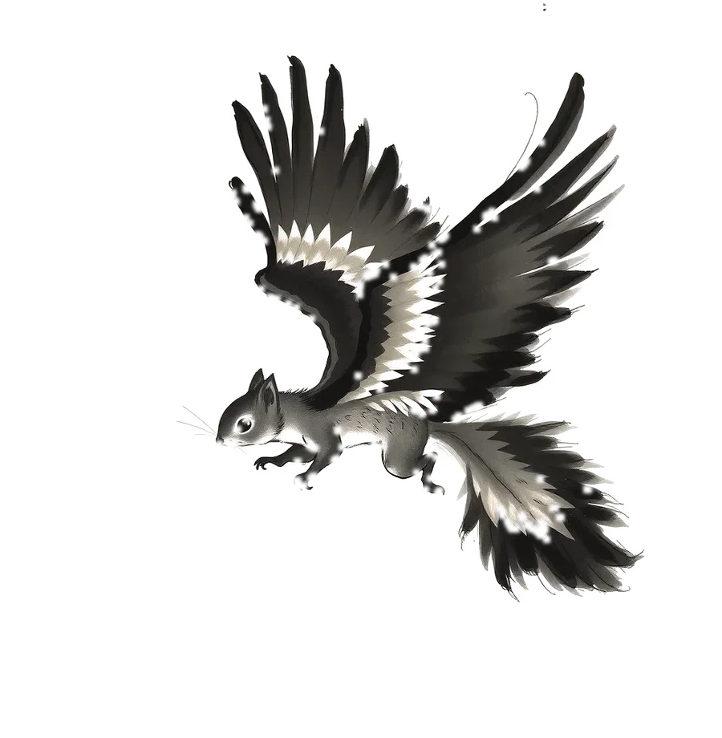
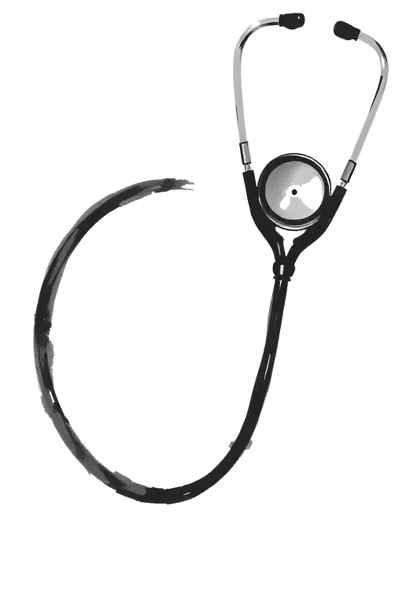
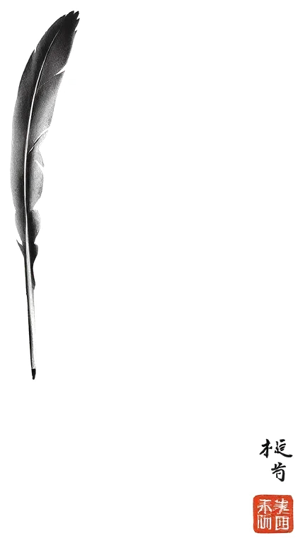
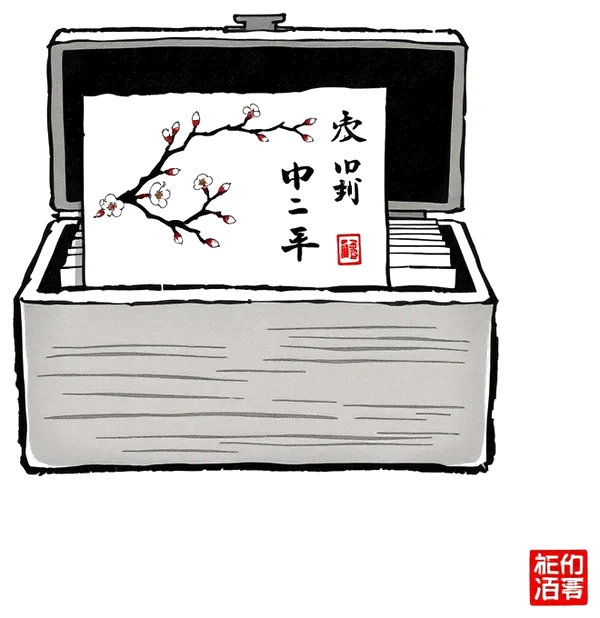
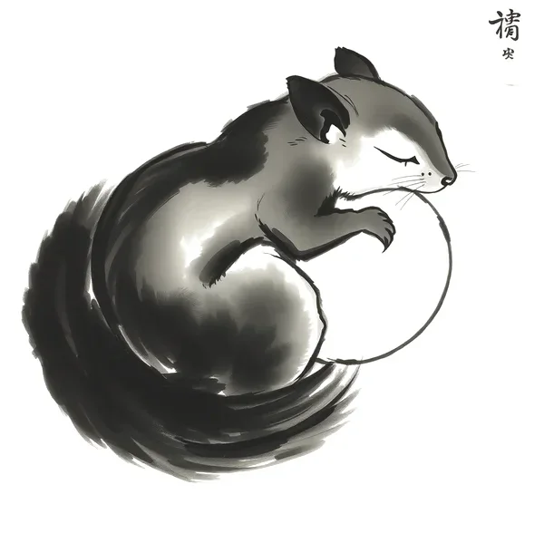

Three tools, gathered with care.
Each one exists because a real problem kept coming back. Nothing more, nothing less.

Arztrechnung Prüfer
Check German private medical invoices (GOÄ/GOZ) against the official thresholds. Traffic-light report as PDF.

Readability Scorer
Real-time readability analysis for any text in your browser. Seven formulas, sentence-level feedback.

AI Chat Organizer
Folders, tags, search and prompt templates for ChatGPT, Claude and Gemini conversations.
Flying squirrels are nocturnal.
This software is built at night — beside a day job, piece by piece, the way a squirrel builds its stash.
Every tool carries four stamps.
Local-first
Extensions process everything on your device. Nothing leaves your browser.
No account
No sign-up, no email address. Pro is unlocked with a license key.
No tracking
No analytics, no pixels, no third parties. There is simply no data to sell.
Fair pricing
Everything works without paying. Pro features are optional and cancellable.

Time to rest.
Questions, feedback, or a problem that deserves a tool of its own?
feishudigital@gmail.com